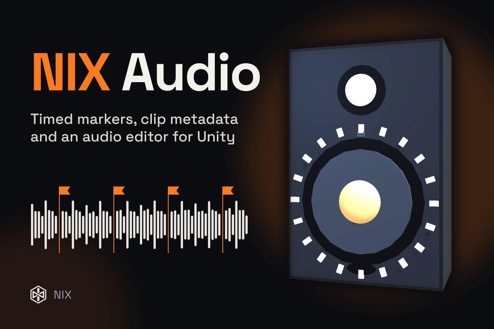

AudioEditor toolAsset Store — in review
NIX Audio
Play AudioClips with per-clip settings, timed markers that call your code, fades and voice priority — plus an in-editor Audio Studio and a live voice profiler.
AudioPlayer.Instance.Play(swing, transform)
.FadeIn(0.2f)
.OnMarker("hit", OnHit);- Markers placed on the waveform fire callbacks — on every loop.
- Per-clip metadata: volume, random pitch, 3D, priority, limits, cooldown.
- Voice pool with priority-aware stealing; no allocations per Play.
- Audio Studio: edit metadata, place markers, trim, gain, normalize, speed.
- Profiler: voices, audio time, clip memory and markers, frame by frame.
- Demos: showcase scenes and an FPS prototype driven by audio.